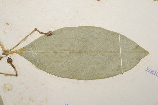
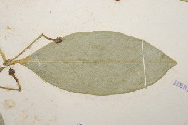
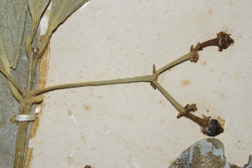
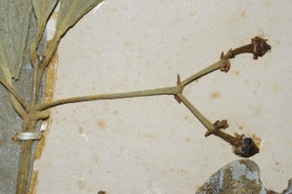

Images :
 

 

| Habit : | Shrubs or small trees . |
| Leaves : | Leaves simple , opposite , decussate ; petiole 0.5 cm long; lamina 7.5-8.5 x 2.7-3.5 cm, elliptic-obovate , apex obtuse , base cuneate , coriaceous , entire or with a few teeth at apex ; midrib slightly raised; secondary_nerves 7-9 pairs, distinct; tertiary_nerves broadly reticulate . |
| Inflorescence / Flower : | Inflorescence axillary cymes or extra-axillary , 6-7 flowered. |
| Fruit and Seed : | Capsules , subglobose , 1-1.6 cm across; seeds subglobose , arillate . |